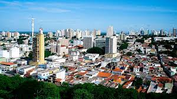
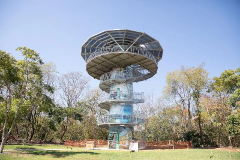
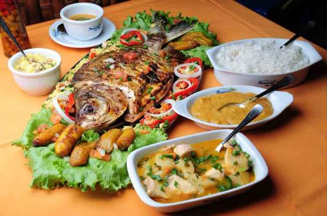
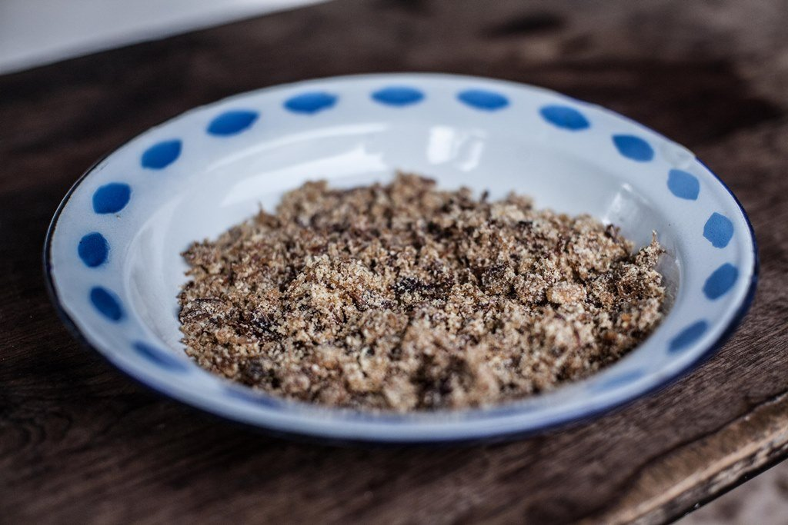

Cuiabá
Cuiabá, a capital do estado de Mato Grosso, é uma cidade que encanta com sua diversidade cultural, gastronomia única e áreas verdes. Conhecida como a "Cidade Verde", Cuiabá oferece uma mistura de modernidade e natureza, tornando-a um destino atraente para visitantes de todas as idades.

Praça Central - Cuiabá
Parque Mãe Bonifácia
O Parque Mãe Bonifácia é um parque urbano no coração de Cuiabá, conhecido por sua beleza natural, trilhas e diversidade de fauna e flora. É um local perfeito para caminhar, fazer piqueniques e apreciar a natureza no meio da cidade.

Feira do Porto
A Feira do Porto é uma feira de artesanato e comida que acontece regularmente em Cuiabá. Os visitantes podem encontrar uma variedade de produtos artesanais, roupas, acessórios e pratos típicos da região.
Peixada Cuiabana
A peixada cuiabana é um prato típico da região, feito com peixes de água doce, banana-da-terra, e outros ingredientes locais. É uma iguaria saborosa que representa a culinária cuiabana.

Paçoca de Pilão
A paçoca de pilão é um doce típico de Cuiabá, feito com carne de sol desfiada, farinha de mandioca e temperos. É uma sobremesa deliciosa que faz parte da cultura culinária da cidade.
